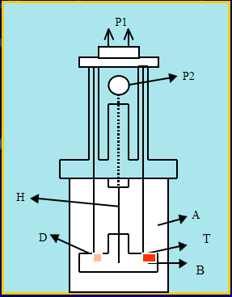
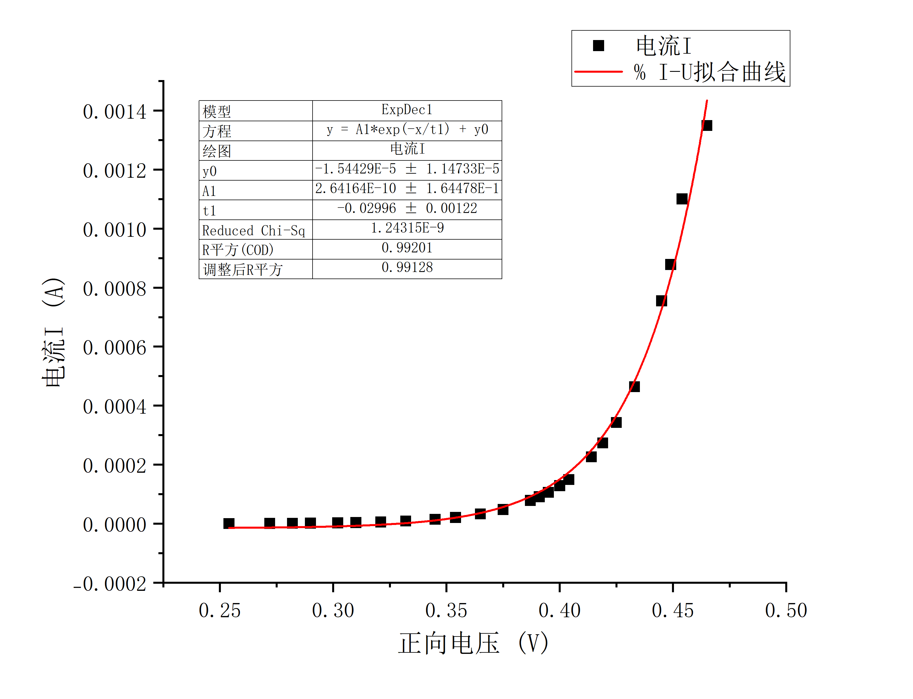
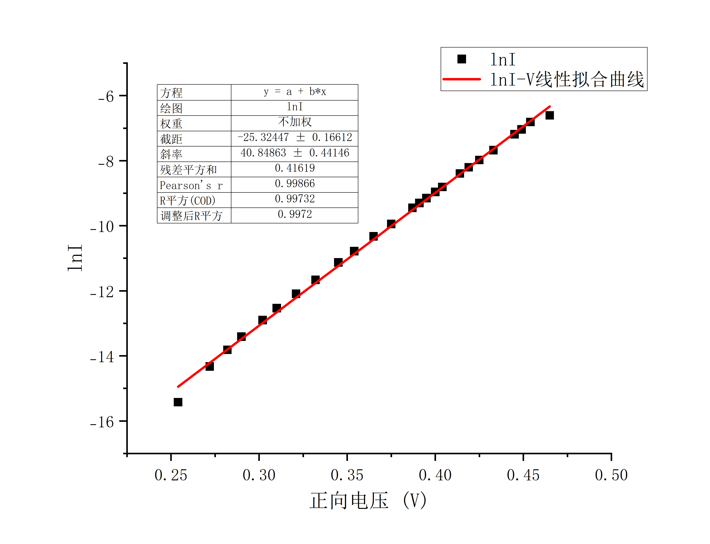
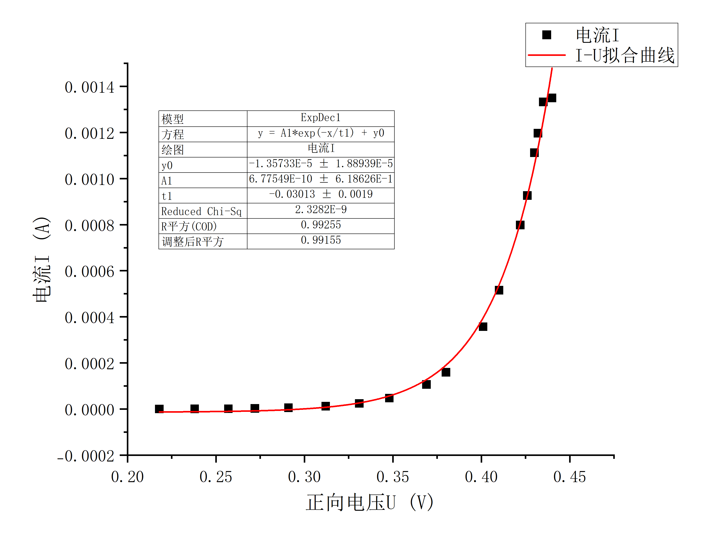

PN结的物理特性及玻尔兹曼常数测定¶
2024/9/25
一、实验综述¶
1、实验目的¶
- 了解PN结测温基本原理和应用;
- 验证PN结正向压降随温度升高而降低的特性;
- 学会使用PN结温度传感器测试仪。
2、实验背景¶
半导体PN结的物理特性是物理学和电子学的重要基础内容之一。本仪器用物理实验方法，测量PN结扩散电流与电压关系，证明此关系遵循指数分布规律，并较精确地测出玻尔兹曼常数,同时使学生学会测量弱电流的一种新方法。
3、实验原理¶
-
弱电流测量
过去物理实验中10-6A–10-11A量级弱电流值常采用光点反射式检流计测量，该仪器灵敏度较高约10－9A分度，但有许多不足之处。如十分怕震，挂丝易断；使用时稍有不慎，光标易偏出满度，瞬间过载引起张丝疲劳变形产生不回零点及指标变差大；使用和维修极不方便。近年来，集成电路和与数字化显示技术越来越普及。高输入阻抗运算放大器性能优良，价格低廉，用它组成电流－电压变换器测量弱电流信号，具有输入阻抗低，电流灵敏度高。温漂小、线性好、设计制作简单、结构牢靠等优点，因而被广泛应用于物理测量中。OP07是一个高输入阻抗集成运算放大器，用它组成电流－电压变换器如图所示。

其中虚线电阻Zr为电流－电压变换器等效输入阻抗。由图1可知，运算放大器的输出电压U0为
\(U_0=-K_0U_1\) (1)
式中\(U_1\)为输入电压，\(K_0\)为运算放大器的开环电压增益，即图1中电阻\(R_t\rightarrow\infty\)时的电压增益，\(R_t\)称为反馈电阻。因为理想运算放大器的输入阻抗\(r\rightarrow\infty\),所以信号源输入电流只流经反馈网络构成的通路。因而有
\(I_s=(U_i-U_0)/R_f=U_i(1+K_0)R_f\) (2)
由(2)可得电流－电压变换器等效输入阻抗\(Z_r\) 即
$Z_r=U_i/I_s=R_f/(1+K_0)\approx R_f/K_0 $ (3)
根据(1)式和(2)式可得电流-电压变换器电流是与输出电压U0之间的关系式，即
\(I_s=-\frac{U_0}{K_0}(1+K_0)/R_f=-U_0(1+\frac1{K_0})/R_f\approx-\frac{U_0}{R_f}\) (4)
由(4)式只要测量输出电压\(U\)\(0\)和已知\(R\)\(f\)的情况下，即可求得值。
以高输入阻抗运算放大器LF356为例,其开环增益\(K_0\)约2×105,输入阻抗\(r=10^{12}\Omega\),若\(R_f\)为\(1.00M\Omega\),则由式(3)得,
\(Z_r=1.00\times10^6\Omega/(1+2\times 10^5)\approx5\Omega\)
若选用四位半量程200mV的数字电压表，它最后一位变化为\(0.01mV\)，那么用上述 电流－电压变换器能显示最小电流值为\(0.01mV/1.00\times10^6\Omega= 10^{-11}A\)。从这一实例说明用集成运算放大器组成的电流－电压变换器测量弱电流，具有输入阻抗小，灵敏度高的优点。 2. PN结的物理特性测量
由半导体物理学中有关PN结的研究，可以得出PN结的正向电流－电压关系满足
\(I=I_0(e^{\frac{eU}{KT}}-1)\) (5)
式中\(I\)是通过PN结的正向电流，\(I_0\)是不随电压变化的常数，\(T\)是热力学温度，\(e\)是电子的电荷量，\(U\)为PN结的正向压降,\(K\)为玻尔兹曼常数。由于在常温（300K）下，\(KT／e＝0.026V\)，而PN结正向压降约为十分之几伏，则\(e^{\frac{eU}{KT}}>>1\)，式(5)括号内－1项完全可以忽略，于是有
\(I=I_0e^{\frac{eU}{KT}}\) (6)
也即PN结正向电流随正向电压按指数规律变化。若测得PN结\(I－U\)关系值，则利用(6)式可以求出\(e/KT\)。在测得温度\(T\)后，就可以得到\(e/K\)常数，将电子电量作为已知值代入，即可以求得玻尔兹曼常数\(K\)。对(6)式两边取对数，有
\(ln I=lnI_0+\frac{eU}{KT}\) (7)
同样可以根据(7)式取对数后根据\(ln I-U\)关系值，求出\(e/KT\)，进而得到玻尔兹曼常数\(K\)。
实验仪器如图所示。

4、注意事项¶
- ±15V电源供运算放大器使用，请勿作其它用途。
- 更换运算放大器必须在切断电源条件下进行，并注意引脚数字和集成电路方向。
- 不宜使用其它型号三极管作为实验样品做实验。例TIP31三极管为NPN管，而TIP32型三极管为PNP管，所加电压极性不相同。
- 实验结束应先关电源，再拆除接线。
- HTC温度控制器与HTC加热附件组成干井恒温室，供实验样品放置。实验中测温探头和加热连接线不可相碰，通电前先连接好上述线路，拆去线路前须断开电源。
二、实验内容¶
1、实验仪器¶
-
测试仪

仪器编号 仪器名称 仪器说明 1 PN结工作电源 0-1.5V可调 2 三位半数字电压表 0-2V 3 实验样品接口 红线接B、黑线接E、黄线接C，实验样品（功率管）放于恒温室（干井）中 4 四位半数字电压表 0-20V 5 电流-电压转换集成电路 6 电源插座和电源开关 7 集成电路+15V电源 8 集成电路-15V电源 9 恒温室电压输入接线柱 仪器编号 仪器名称 仪器说明 10 恒温室（干井）用于放置实验样品 可加入导热油 11 恒温室温度传感器接口 12 恒温室电压输入接线柱 13 HTC温度控制器电压输出接线柱（-） 14 HTC温度控制器电压输出接线柱（+） 15 温控器温度传感器信号输入 16 实测温度显示窗 17 设定温度按钮 18 设定目标温度显示窗 -
PN结样品架

仪器编号 仪器名称 仪器说明 A 样品室 可卸的筒状金属容器，筒盖内设橡皮圈盖与筒套具相应的螺纹，可使两者旋紧保持密封 B 样品座 D 待测PN结 采用3DG6晶体管 T 测温元件 H 加热器 P1 D、T引脚线 P2 加热电源插座
2、实验操作¶
- 首先检查与连接实验系统，把TIP31型三极管浸没在盛有变压器油干井槽中，在室温情况下，改变正向电压U1，测量相应电压U2，约测10多数据点，至U2值达到饱和时(U2值变化较小或基本不变)，结束测量。
- 改变干井恒温器温度，待PN结与干井温度一致时，重复测量U1和U2的关系数据，由U2计算得到相应的电流I,并与室温测得的结果进行比较。
- 对在同一温度测得的每组U1 -I数据进行指数拟合，对U1-ln I进行线性拟合，分别求得相应的玻尔兹曼常数进行比较。
三、实验数据记录与处理¶
1、实验数据记录¶
-
第一组 \(T_1=297.55K\)
实验组数 正向电压\(U_1/V\) 电压\(U_2/V\) 电流\(I/A\) \(ln I\) 1 0.302 0.025 0.0000025 -12.89921983 2 0.332 0.086 0.0000086 -11.66374835 3 0.354 0.208 0.0000208 -10.78055757 4 0.375 0.48 0.000048 -9.944309547 5 0.387 0.786 0.0000786 -9.451138859 6 0.395 1.061 0.0001061 -9.151128512 7 0.404 1.494 0.0001494 -8.808883285 8 0.414 2.265 0.0002265 -8.392765613 9 0.419 2.734 0.0002734 -8.204574634 10 0.425 3.430 0.000343 -7.977780111 11 0.433 4.639 0.0004639 -7.675841546 12 0.445 7.552 0.0007552 -7.188527943 13 0.449 8.781 0.0008781 -7.037750076 14 0.454 11.007 0.0011007 -6.811808938 15 0.465 13.494 0.0013494 -6.60809523 16 0.470 13.494 0.0013494 -6.60809523 17 0.475 13.494 0.0013494 -6.60809523 18 0.480 13.494 0.0013494 -6.60809523 -
第二组 $T_2=303.05K $
实验组数 正向电压\(U_1/V\) 电压\(U_2/V\) 电流\(I/A\) \(ln I\) 1 0.242 0.002 0.0000002 -15.42494847 2 0.263 0.008 0.0000008 -14.03865411 3 0.283 0.021 0.0000021 -13.07357321 4 0.302 0.046 0.0000046 -12.28945425 5 0.324 0.111 0.0000111 -11.40856545 6 0.345 0.256 0.0000256 -10.57291821 7 0.364 0.543 0.0000543 -9.820986331 8 0.383 1.146 0.0001146 -9.074062754 9 0.403 2.473 0.0002473 -8.304908383 10 0.414 3.792 0.0003792 -7.877446788 11 0.422 5.099 0.0005099 -7.58129593 12 0.432 7.684 0.0007684 -7.171200127 13 0.434 8.324 0.0008324 -7.091197463 14 0.436 8.944 0.0008944 -7.019357456 15 0.441 10.740 0.001074 -6.836365283 16 0.444 11.984 0.0011984 -6.726767945 17 0.447 13.378 0.0013378 -6.616728805 18 0.451 13.495 0.0013495 -6.608021126 -
第三组$T_3=307.95K $
实验组数 正向电压\(U_1/V\) 电压\(U_2/V\) 电流\(I/A\) \(ln I\) 1 0.218 0.001 0.0000001 -16.11809565 2 0.238 0.005 0.0000005 -14.50865774 3 0.257 0.012 0.0000012 -13.633189 4 0.272 0.024 0.0000024 -12.94004182 5 0.291 0.053 0.0000053 -12.14780374 6 0.312 0.12 0.000012 -11.33060391 7 0.331 0.244 0.0000244 -10.62092743 8 0.348 0.474 0.0000474 -9.956888329 9 0.369 1.065 0.0001065 -9.147365573 10 0.380 1.594 0.0001594 -8.744093792 11 0.401 3.573 0.0003573 -7.936934793 12 0.410 5.156 0.0005156 -7.570179287 13 0.422 7.985 0.0007985 -7.13277559 14 0.426 9.262 0.0009262 -6.984420364 15 0.430 11.122 0.0011122 -6.801415243 16 0.432 11.968 0.0011968 -6.728103951 17 0.435 13.326 0.0013326 -6.620623358 18 0.440 13.497 0.0013497 -6.607872933
2、实验数据处理¶
下取\(e=1.602 176 634×10^{-19}C\)，\(k_{文献}=1.380649×10^{-23}J/K\)
对于采用的指数拟合模型，有\(-\frac1{t_1}=\frac{e}{KT}\Rightarrow k=-\frac{et_1}{T}\)
对于采用的线性拟合模型，有\(b=\frac e{KT}\Rightarrow k=\frac e{bT}\)
-
\(T_1=297.55K\)

\(k_{1}=-\frac{et_1}{T_1}=1.613214\times10^{-23}J/K\)
\(\varepsilon_1=\frac{|k_1-k_{文献}|}{k_{文献}}\times 100\%=16.84461\%\)

\(k_1'=\frac e {bT_1}=1.318175\times10^{-23}J/K\)
\(\varepsilon_1'=\frac{|k_1'-k_{文献}|}{k_{文献}}\times 100\%=4.524973\%\) 2. \(T_2=303.05K\)

\(k_{2}=-\frac{et_1}{T_2}=1.567019\times10^{-23}J/K\)
\(\varepsilon_2=\frac{|k_2-k_{文献}|}{k_{文献}}\times 100\%=13.49872\%\)

\(k_2'=\frac e {bT_2}=1.297492\times10^{-23}J/K\)
\(\varepsilon_2'=\frac{|k_2'-k_{文献}|}{k_{文献}}\times 100\%=6.023037\%\) 3. $T_3=307.95K $

\(k_{3}=-\frac{et_1}{T_3}=1.567579\times10^{-23}J/K\)
\(\varepsilon_3=\frac{|k_3-k_{文献}|}{k_{文献}}\times 100\%=13.53928\%\)

\(k_3'=\frac e {bT_3}=1.283471\times10^{-23}J/K\)
\(\varepsilon_3'=\frac{|k_3'-k_{文献}|}{k_{文献}}\times 100\%=7.038574\%\)
3、实验数据分析¶
| \(k_i/J\cdot K^{-1}\) | \(k_i'/J\cdot K^{-1}\) | \(\varepsilon_i\) | \(\varepsilon_i'\) | |
|---|---|---|---|---|
| 1 | \(1.613214\times10^{-23}\) | \(1.318175\times10^{-23}\) | \(16.84461\%\) | \(4.524973\%\) |
| 2 | \(1.567019\times10^{-23}\) | \(1.297492\times10^{-23}\) | \(13.49872\%\) | \(6.023037\%\) |
| 3 | \(1.567579\times10^{-23}\) | \(1.283471\times10^{-23}\) | \(13.53928\%\) | \(7.038574\%\) |
\(\bar k=\frac{\sum^3 _{i=1}k_i}{3}=1.582604\times 10^{-23}J\cdot K^{-1}\)
\(\varepsilon_{相对}=\frac{|k_i-\bar k|}{3\bar k}\times100\%=1.289436\%\)
\(\varepsilon_{绝对}=\frac{|\bar k_i-k_{文献}|}{k_{文献}}\times100\%=14.62754\%\)
\(\bar k'=\frac{\sum^3 _{i=1}k_i'}{3}=1.299713\times10^{-23}J\cdot K^{-1}\)
\(\varepsilon_{相对}'=\frac{|k_i'-\bar k'|}{3\bar k'}\times100\%=0.9470039\%\)
\(\varepsilon_{绝对}'=\frac{|\bar k_i'-k_{文献}|}{k_{文献}}\times100\%=5.862195\%\)
四、实验拓展¶
-
对于PN结，正向电流与与电压满足关系式\(I=I_0(e^{\frac{eU}{KT}}-1)\)，而在该实验条件下，我们将式子近似为\(I=I_0e^{\frac{eU}{KT}}\)，这样的近似为什么可以进行？
在常温（\(\approx 300K\)）下，\(KT／e＝0.026V\)，而PN结正向压降数量级为\(10^{-1}V\)，则\(e^{\frac{eU}{KT}}>>1\)，括号内－1项相对完全可以忽略。 2. 采用的线性拟合和指数拟合方式哪种更好？
由实验数据分析环节，三组试验后，线性拟合无论是相对误差还是绝对误差均明显优于指数拟合，得到的数据更加稳定，也更接近玻尔兹曼常数的文献值，事实上，通过对数变换，可以将指数关系线性化，减少了极端值的影响，使得误差分布更接近于正态分布。这有助于提高线性回归模型的稳定性和精度，从而降低了总体的预测误差。 3. 在测定正向电压及电流时，取点宜在初始阶段多一点还是后续阶段多一点？
宜在后续阶段多一点，从数据和图像来看，初始阶段随正向电压变化电流变化不大，表现在图像上较平缓，上升趋势较慢，不需要过多数据点进行维护；而在后续阶段，电流随正向电压变化快速上升，图像表现出的上升趋势较为陡峭，需要较多数据点维护，用来反应该阶段函数较为精确的变化。
-
简述PN结基本特性。
PN结基本特性包括了单向导通性：PN结在正向偏置时导电，I-U特性呈现出指数关系，电流随电压的增加而急剧增加，而在反向偏置时，电流基本保持恒定，接近于零。同时在PN结中，由于P区和N区的载流子扩散形成的电场，导致了内建电势。这一电场阻止了更多的载流子扩散。而在PN结的交界面形成的区域，载流子被耗尽，形成耗尽区。该区域对电流的传输有重要影响。PN结还具有温度依赖性，当温度升高时，正向导通电压会下降，反向漏电流会增加。 5. 设计一个完整的输出直流5V的稳压电路，要求：画出电路，解释各个器件的工作原理、特性和作用。
Vin ----+-----[C1]----+---- [LM7805] ---- Vout (5V)
| |
| |
[C2] GND
|
GND1. C1（输入电容）¶
- 工作原理：输入电容C1在电源输入端并联，能够储存电能。当输入电压Vin中存在瞬时变化（如突发负载变化）时，C1能快速提供所需电流，避免电压骤降。
- 特性：通常选择电解电容或陶瓷电容，电容值一般在10μF到100μF之间。
- 作用：平滑输入电压，滤除高频噪声，提高电源稳定性。
2. LM7805（线性稳压器）¶
- 工作原理：LM7805是一个三端稳压器，内部有一个误差放大器和一个电压分压器。当输出电压Vout（5V）变化时，反馈机制会调整内部的导通状态，通过改变传导电流来保持输出电压稳定。
- 特性：输入电压范围通常为7V到35V，最大输出电流为1A，具有过载保护、短路保护等功能。
- 作用：将高于5V的输入电压Vin稳定转换为5V输出电压Vout，供电给低电压电路。
3. C2（输出电容）¶
- 工作原理：输出电容C2并联在输出端，能够滤除由负载变化引起的瞬时电流变化，进一步平滑输出电压。
- 特性：通常选择电解电容或陶瓷电容，电容值在10μF到100μF之间，且要能承受输出电压（至少6.3V以上）。
- 作用：降低输出纹波，提高输出电压的稳定性，确保供电给后续电路时电压的平稳。